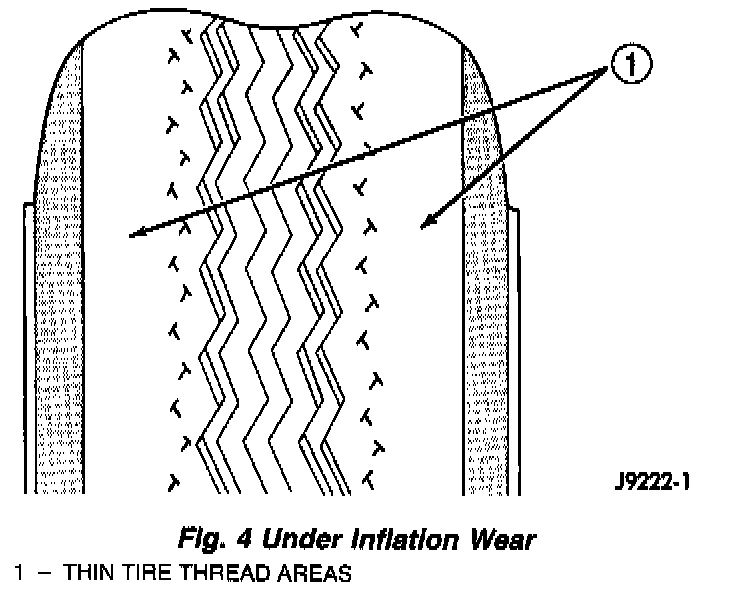
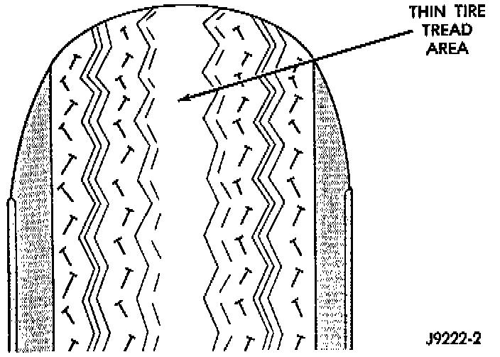

Tire Inflation Pressures
CAUTION: Over or under inflated tires can affect vehicle handling. The tire can fail suddenly, resulting in loss of vehicle control.Fig. 4:

Under inflation causes rapid shoulder wear of the tire tread and tire flexing. This can result in failure of the tire.

Over inflation causes rapid center wear and loss of the tire's ability to cushion shocks.
Improper inflation can cause:
- Uneven wear patterns
- Reduced tread life
- Reduced fuel economy
- Unsatisfactory ride
- The vehicle to drift.
For proper tire air inflation pressure specifications refer to the Tire Inflation Pressure Chart provided with the vehicle.
Tire pressures have been chosen to provide safe operation, vehicle stability, and a smooth ride. Tire pressure should be checked cold once per month. Check tire pressure more frequently when the weather temperature varies widely. Tire pressure will decrease when the outdoor temperature drops.
Tire inflation pressures specified on the placard are always cold inflation pressure. Cold inflation pressure is obtained after the vehicle has not been operated for at least 3 hours, or the vehicle is driven less than one mile after being inoperative for 3 hours. Tire inflation pressures may increase from 2 to 6 pounds per square inch (psi) during operation. Do not reduce this normal pressure build-up.